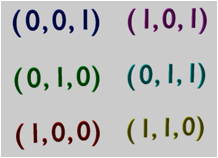
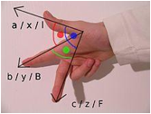
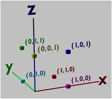
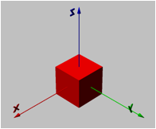

Author: Walid Taha
Acumen is an experimental modeling and simulation environment for hybrid systems. It is built around a small, textual modeling language. This document is a reference manual for the key features of the environment and the language when the “Traditional” option is selected from the semantics pull-down menu.
The most up-to-date version of this manual is available at http://bit.ly/Acumen-manual-2014. To report bugs with Acumen and/or issues with this document, please use the online form available at http://www.acumen-language.org/p/report-bug.html. To continue to be updated about the development of Acumen, please subscribe to the announcements mailing list at http://bit.ly/Acumen-list.
The standard mode for using the Acumen environment is through the GUI, which makes it possible to:
● Browse files in a given directory
● Load, edit, and save the text of a model
● Run models
● View a Plot, a Table, or a 3D visualization of variables over time
● Read error messages reported to the system
An Acumen model consists of a series of class declarations. A model must contain a declaration for a model called Main. The declaration of the Main model must have exactly one parameter. By convention, that parameter is called simulator. For example, a typical model would have this form:
model Ball (mass, size) =
// Body of declaration of class Ball
model Main (simulator) =
// Body of declaration of class Main
The remainder of any line after the keyword // is ignored and treated as a comment. Similarly, any text that starts with /* and ends with */ is also a comment.
Model declarations may appear in any order.
Model declarations start with a name
for the model and a list of formal parameters, followed by an equality sign (=). After the name and parameters, the
model declaration can contain an “initially” section. An example is as follows:
model Ball (mass, size) =
initially
x_position = 0,
y_position = 0
always
// Rest of the body of declaration of model Ball
“Initially” sections define the initial value for the variables introduced in this section. Parameter variables can be used in the definition of these initial values. Both parameter variables and model variables can be used in the rest of the body of the class declaration. Variables introduced in this section cannot be referenced in the section itself.
Within a model declaration, it is possible to instantiate objects of another model. This can be done in either the “initially” section or in the rest of the body. When done in the “initially” section, it is called a 'static' instance, and when in the body, a 'dynamic' instance.
model Main (simulator) =
initially
b = create Ball (5, 14) // Static instance
always
// First part of model definition
create Ball (10, 42) // Dynamic instance
// Last part of model definition
New users will find it easier to work with static instances, since creating dynamic instances requires more care.
Acumen expressions can be built out of variables, literals, built-in functions, vector generators, and summations.
In Acumen, a variable name is a sequence of one or more characters starting with a letter or an underscore, and thereafter possibly including digits. Examples of variable names include a, A, red_robin, and marco42.
As a convention, variable names used in the language in a special way usually start with an underscore (_). An example is the special variable _3D.
Variables
A variable has a name followed by zero or more apostrophes ('). Such apostrophes indicate that this variable is the time derivative of a variable with the apostrophe removed. Examples of such variables include x', x'', and x'''.
Acumen supports literal values of different types, including booleans (true and false), integers (1, 2, 3, etc.), decimal values (1.2, 1.3, etc), floating point numbers (1.2E-17, 1.3E14, etc.), strings ("rabbit", "ringo", etc.), and vector values ((1,2,3), (true, false, false), ("a", "ab", "abc"), etc.).
The special constants, pi, children, and the names of basic colors (see below) are also literals.
Vectors can be constructed by writing things like (1,2,3) and (1,1+1,2+1). In addition, they can be generated by specifying a starting value, step size, and ending value. This is written as start:step:end. For example, 4:2:8 generates (4,6,8). We can omit the step if it is 1, and write start:end. For example, 4:8 generates (4,5,6,7,8).
We can look up elements in a vector by writing x(0) to mean the first element of x, writing x(1) for the second element, and so on. The length function can be used to determine the length of lists:
model Main(simulator) =
initially
list = (1,2,3,4,5),
size = 0
always
size = length(list)
More typically, length(list) would be used for iteration.
It is possible to iterate over collections to compute the summation of a series of values. The following example illustrates the syntax for this operation:
sum i*i for i=1:10 if i%2 == 0
As this example illustrates, this construct allows us to indicate the iteration range and to filter the values being adding based on a condition. The if clause can be omitted when the intention is that the condition is always true.
There are five types of statements in Acumen, namely: continuous assignments, conditional (or guarded) statements, discrete assignments, iteration, and sequences of statements.
A continuous assignment has a left-hand side that must be a variable or the derivative of a variable, and a right-hand side that can be any expression. Examples include the following:
a = f/m
x'' = -9.8
Any such statements in the same object are evaluated simultaneously after all discrete assignments have been performed and are not causing any further change to the state of the program.
If-statements are the first type of conditional statement. They allow us to express that different statements take effect under different conditions. The following code illustrates how if-statements are written:
if (x>0) then
x'' = -9.8
else
x' = 0
In this example, as long as x is greater than zero then the first continuous assignment is in effect. The result will be that the x' is decreasing, and when it becomes negative, x will also decrease until the condition is no longer true. Once that happens, the second equation will take effect, which will cause x to remain constant. By surrounding multiple comma-separated statements in parentheses, they can be included in the else branch of an if statement :
if (x>0) then
x'' = -9.8
else
(x' = 0, ...)
A switch/case-statement is the second type of conditional statement. It can be viewed as a generalization of an if-statement. It allows us to enable different statements under multiple different cases depending on the value of a particular expression that we are switching on. The following example illustrates this idea:
match myCommand with
[ "Fall" ->
x'' = -9.8
| "Freeze" ->
x' = 0
| "Reset" ->
x = 0
]
Only one case can be enabled at any one point in time. Matching must be done against an explicit, constant value (like "Fall" and "Freeze"). If multiple clauses match the same value, only the first one will be enabled.
A discrete assignment has a left hand side that must be a variable or the derivative of a variable, and a right hand side that can be any expression. Examples include the following statements:
t+ = 0
t'+ = 1
t''+ = 0
Discrete assignments represent an instantaneous change in values. They are used in the private section of models, where the initial values for variables are specified. They can also be used to indicate that there is a discontinuous change (hence the name “discrete”) to a particular variable during a simulation.
For a simulation to behave properly, any discrete assignment in the body of a model definition (that is, outside the “initially” section) should generally occur inside a conditional statement (such as an if-statement or a match statement). The following example illustrates an acceptable use of discrete assignments:
if (x>=0) || (x'>0) then
x'' = -9.8
else
x'+ = -0.5 * x'
Here, the value of x' is reset to change direction (the negative sign) and reduce magnitude (multiplication by 0.5) to model a “bounce” when a “ball” of height x hits the ground at level 0.
Note that as soon as the assignment happens, the condition is falsified, so the discrete assignment is enabled for exactly one time instant. Furthermore, because the condition requires that x' is negative, the new x' must be positive; therefore, we can also expect that the condition on the first line will become true, and the “ball” will again be subject to a downward acceleration (which can be seen as modeling the effect of gravity).
For-statements allow us to perform iteration. Examples include:
foreach i in 1:10 do x=2*y
and
foreach c in children do c.x + = 15
The second type of iteration illustrates how an object can assign a value to the x field of all its children.
Multiple simultaneous statements can be expressed in a collection by simply placing a comma (,) between them. For example:
x'' = -9.8,
y'' = 0
Order is irrelevant in such statements, as they are always evaluated simultaneously.
Initially, the simulation of an Acumen model has only one object, Main. As objects are created dynamically, a tree of objects is formed. Main is always the root of this tree. The children of an object are the objects created by that object.
Every simulation sub-step involves a traversal of the entire tree starting from Main. Two kinds of sub-steps are performed, according to the diagram below. During a discrete step, discrete assignments and structural actions (create, terminate and move) are processed: the tree is traversed to perform active structural actions and collect active discrete assignments. Once collected, the discrete assignments are performed in parallel. So, for example, x+ = y, y+ = x is a swap operation. For every object, first the structural actions of each parent are executed, and then the structural actions of all children are executed. If there are active actions that also change the state, we keep making discrete steps in this fashion. Otherwise, we make a continuous step. During a continuous step, all continuous assignments and integrations are performed.
Acumen has a _3D panel that can be used to create static or dynamic visualizations in 3D. Following we introduce the constructs needed to use this functionality.
All 3D objects must have a color. Colors are described by a three-dimensional intensity representing the red-green-blue (RGB) dimensions of the colors. The color is represented by a vector of the form (r,g,b). The following display illustrates some basic examples of RGB combinations:

It is important to note here that the colors indicate intensities, and NOT coordinates. The fact that both are represented as a triple (that is, the vector is size three) is coincidental. Intensity values in each color dimension should be between 0 and 1.
To make it easier to put together _3D statements, Acumen also defines constants for the intensities of the basic colors: red, green, blue, white, black, yellow, cyan and magenta.
Acumen's _3D panel display uses a right-hand coordinate system, which is illustrated by the following image from the Wikipedia article on the Cartesian Coordinate System:

The following example illustrates the coordinate system and some examples of points in that system. Each point is marked by a small cube, and next to it is text indicating the (x,y,z) coordinate of that point:

Note that, unlike in the case of the color illustration above, the triples here are coordinates in three dimensional space, and not color intensities.
Text can be displayed in the _3D panel using a command such as the following:
_3D =
(Text // Type of _3D object
center=(-2.2,0,0) // Starting point in (x,y,z) form
size=0.75 // Font size
color=(255,255,0) // Color in red-green-blue (RGB) intensity
rotation=(0,0,0) // Orientation (pi/2 around x-axis)
content="Hello!") // Text you wish to display
Note that the starting point is where the text starts (the leftmost point of the displayed text), and not the center of where the text is displayed.
Orientations are angles that indicate how the text should be rotated around the x-, y-, and z-axes, respectively. Rotations are measured in radians, and specify an anti-clockwise rotation. Orientation rotations can be interpreted as rotations around the global frame of reference with the origin relocated to the reference point of the object that we are rotating; they can also be interpreted as having the rotation around the x-axis done first, then the y-axis, then the z-axis.
A box can be displayed in the _3D panel using a command such as follows:
_3D =
(Box // Type of _3D object
center = (0,0,0) // Center point
size = (0.2,1,3) // Size in (x,y,z) form
color = red, // Color
rotation = (0,0,0)) // Orientation
Note that, unlike text, boxes and the other geometric objects use the point indicated in the _3D statement to represent its center point rather than a corner point.
A cylinder can be displayed as follows:
_3D =
(Cylinder // Type of _3D object
center = (0,0,0) // Center point
radius = 0.1 // radius
length = 4 // length
color = cyan, // Color
rotation = (0,0,0)) // Orientation
Unlike a box, a cylinder only has two parameters to specify its dimensions, namely, radius and length. The initial orientation is for its length to be along the y-axis.
A cone can be drawn as follows:
_3D =
(Cone
center = (0,0,0) // Center point
radius = 0.4 // radius
length = 1 // length
color = magenta // Color
rotation = (pi/2,0,0)) // Orientation
Note the similarity between the parameters for the cone and cylinder. The parameter types are the same, but they have a different meaning depending on the shape. The length is along the y-axis, and the pointy side is directed with the increase in the y-axis.
A sphere can be drawn as follows:
_3D =
( Sphere // Type of _3D object
center = (0,0,0) // Center point in (x,y,z) form
size = 0.55 // Radius
color = cyan // Color
rotation = (0,0,0) ) // Orientation
Orientation on a sphere will not have a significant impact on the image.
All the display commands illustrated above can be combined by adding a comma separator and inserting multiple commands inside the outer parens. For example, the following command illustrates the effect of the rotation parameter:
_3D =
( Text center=(-2,0,0) size=1 color=(1,0,0)
rotation=(-pi/2,0,0) content="X"
, Text center=(-2,0,0) size=1 color=(0,1,0)
rotation=(-pi/4,0,0) content="2"
, Text center=(-2,0,0) size=1 color=(0,0,1)
rotation=(0+t,0,0) content="3"
, Text center=(0,0,0) size=1 color=(1,0,0)
rotation=(0,0,0) content="Y"
, Text center=(0,0,0) size=1 color=(0,1,0)
rotation=(0,pi/4,0) content="2"
, Text center=(0,0,0) size=1 color=(0,0,1)
rotation=(0,pi/2+t,0) content="3"
, Text center=(2,0,0) size=1 color=(1,0,0)
rotation=(0,pi/2,0) content="Z"
, Text center=(2,0,0) size=1 color=(0,1,0)
rotation=(0,pi/2,pi/4) content="2"
, Text center=(2,0,0) size=1 color=(0,0,1)
rotation=(0,pi/2,pi/2+t) content="3"
)
This example shows how to combine multiple text objects, but the list can contain combinations of different object types.
In the examples above we simply assigned an initial value to the _3D field in the initially section in the current object. In fact, it is also possible to continuously assign a changing value to the _3D parameter. When this is done, the _3D panel animates the progression of this three- dimensional scene, as observed through the simulation time.
To rotate the view around the center of the current _3D view, click and hold the left mouse button and move the mouse. To change the center of the _3D view, click and hold the right mouse button (on Mac OS, tap touchpad with two fingers ) and move the mouse. The mouse wheel can be used to zoom the view in and out (on Mac OS, swipe up and down with two fingers ).
The camera that defines the _3D view can also be manipulated directly in the model. This is done by adding the special variable _3DView to the model. Note that, as with the _3D variable, to use the _3DView variable in the always section, it is necessary to first declare it in the initially section. In the following model, the camera is situated at (10,10,10) and is rotated by 0.5 radians along each axis, so that it looks at the origin:
initially
_3D = (), _3DView = ()
always
_3D = (Box center=(0,0,0) size=(1,1,1)
color=red rotation=(0,0,0)),
_3DView = ((10,10,10), (0.5,0.5,0.5))
This configuration of the _3DView variable will yield the following view of the _3D scene:

Acumen provides the following built-in functions:
● Unary operators on Booleans and Integers: not, abs, -
● Binary operators on Integers: +, -, *, <<, >>, &, |, %, xor
● Unary operators on Floats: sin, cos, tan, acos, asin, atan, toRadians, toDegrees, exp, log, log10, sqrt, cbrt, ceil, floor, rint, round, sinh, cosh, tanh, signum, abs, -
● Binary operators on Floats: +, -, *, ^, /, atan2
● Relational operators on Integers and Floats: <, >, <=, >=
● Binary operators on Vectors: .*, ./, .^, +, -, dot, cross
● Unary operators on Vectors: norm, length
● Binary operators taking a Scalar and a Vector: +, *
● Binary operators taking a Vector and a Scalar: +, *, /, .^
In most cases, operators that start with a letter are prefix operators that take explicit arguments, such as the case with sin(x), while operators that start with a symbol are infix operators, such as x+y. The only exceptions to this rule are xor, which is an infix operator, and unary -, which is a prefix operator that has no parentheses.
The precedence ordering for built-in functions in Acumen is as follows:
1. Boolean disjunction ||
2. Boolean conjunction &&
3. Boolean equality == and then Boolean inequality ~=
4. Integer less than <, greater than >, less than or equal to <=, and then greater than or equal to >=
5. Vector generators :
6. Numeric addition +, subtraction -, vector addition .+, vector subtraction .-
7. Numeric multiplication *, division /, vector multiplication .*, vector division ./, and integer modulus %
8. Numeric exponentiation ^ and then vector exponentiation .^
9. Numeric unary negation -
10. Field access .
11. Built-in prefix function applications and vector lookup
The simulator parameter to the Main model provides the user with a mechanism to codify how the model should be simulated, as part of the model itself. There are three parameters that the user can specify:
● The initial value of the simulation time is startTime. The default value for this parameter is 0.
● The time when the simulation should terminate is endTime. The default value for this parameter is 10 seconds.
● The numerical integration step size is timeStep. The default value for this parameter is 0.01.
It is generally recommended that any adjustments to these values are made using a discrete assignment at the very start the simulation time.
This manual was prepared by Walid Taha. It was edited by Mark Stephens. Valuable input relating to the core language and its intricacies was provided by Kevin Atkinson, Adam Duracz, Veronica Gaspes, Viktor Vasilev, Fei Xu and Yingfu Zeng. Roland Philippsen and Jawad Masood suggested several suggestions from the point of view of actual users with expertise in analytical dynamics. Support for the development of Acumen and this manual was provided by the US National Science Foundation (NSF) Cyber-Physical Systems (CPS) project #1136099, by the Swedish Knowledge Foundation (KK), and by Halmstad University.